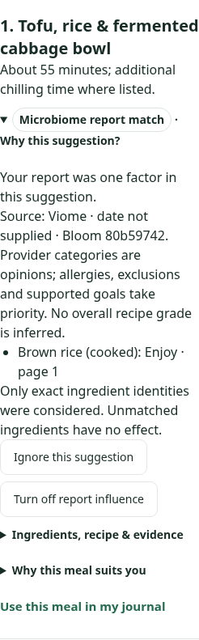
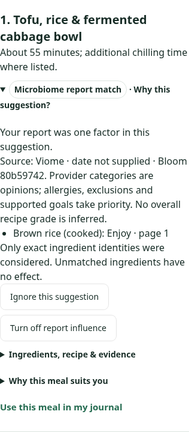
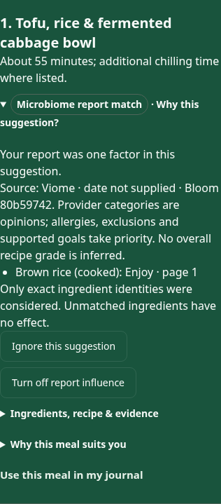

Baselinea40ca6b: existing recommendation articles. New conditional content reuses the Recipe library disclosure and the same account setting; no new layout or clinical claims. These are actual App/HTTP/isolated SQL synthetic captures.
Physical VoiceOver, independent Design and hosted-account acceptance NOT_RUN.


